地政学
サントドミンゴは大統領府、議会、裁判所、省庁、大使館、港湾が近く、ドミニカ共和国の意思決定を集めます。ハイチとの国境、米国との移民関係、カリブ海航路、災害対応も首都の街路に現れ続けます。政策も映ります。
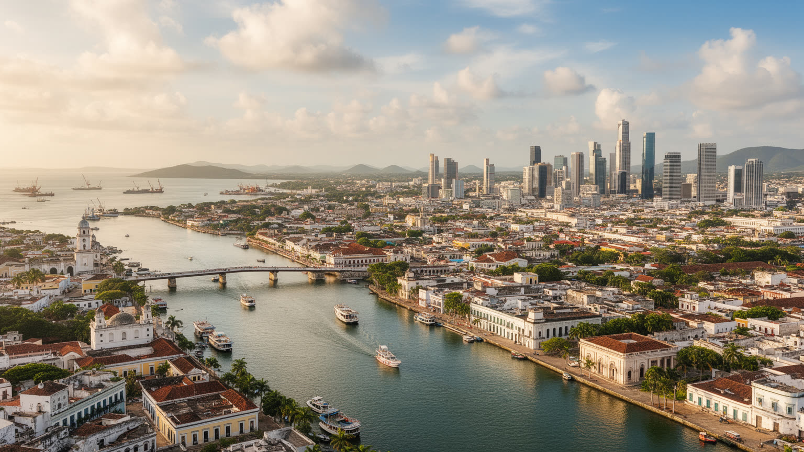
🇩🇴 ドミニカ共和国 / カリブ海 / World City Atlas
カリブ海最古級の植民都市であり、ドミニカ共和国の政治、港湾、金融、移民文化、宗教、音楽、観光、都市格差がオサマ川沿いに重なる首都です。
都市の骨格
サントドミンゴは、植民地時代の石造都市、国家機関、港湾、海辺の道路、急速に広がった郊外住宅地が近距離に重なります。観光都市でありながら、政治と日常労働の密度が高いカリブ海の首都です。
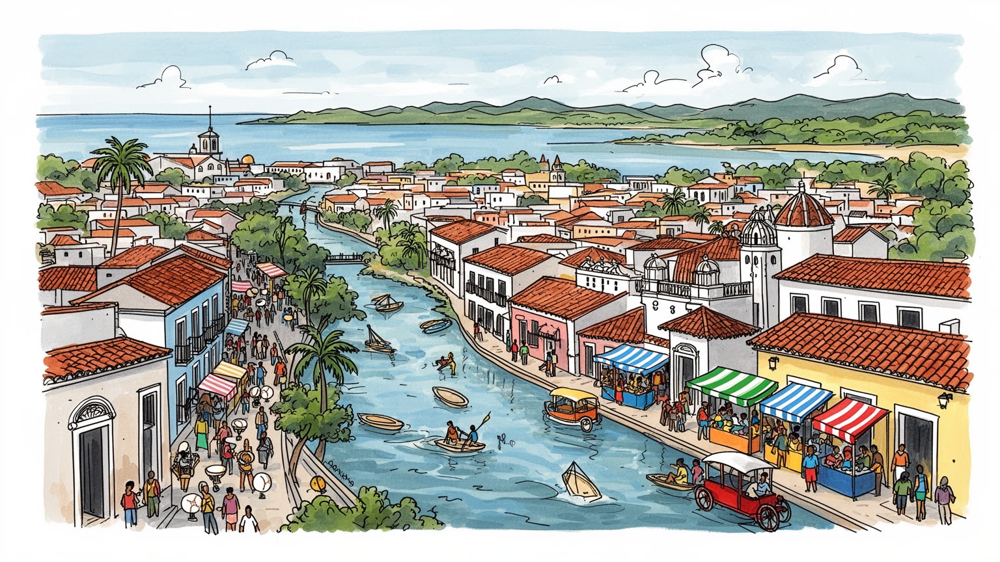
サントドミンゴは大統領府、議会、裁判所、省庁、大使館、港湾が近く、ドミニカ共和国の意思決定を集めます。ハイチとの国境、米国との移民関係、カリブ海航路、災害対応も首都の街路に現れ続けます。政策も映ります。
行政、金融、通信、港湾、卸売、観光、建設が都市を支えます。ホテルや飲食、清掃、警備、配送、屋台、家事労働も大きく、正式な雇用と非公式な仕事が同じ通勤圏で重なっています。賃金差も日々の課題です。今も続きます。
カトリックの聖堂、福音派教会、アフロカリブの記憶、メレンゲとバチャータ、野球、家族行事が暮らしを形作ります。旧市街の遺産だけでなく、近隣の礼拝、踊り、食、露店が都市文化を今も続けます。夜も響きます。
旧市街、マレコン、コロンブス関連遺産、博物館、音楽の夜を楽しめる一方、住民には渋滞、排水、住宅、停電、治安、物価が日々の条件です。観光の成功は、海辺の景観と暮らしの改善を両立できるかで決まります。
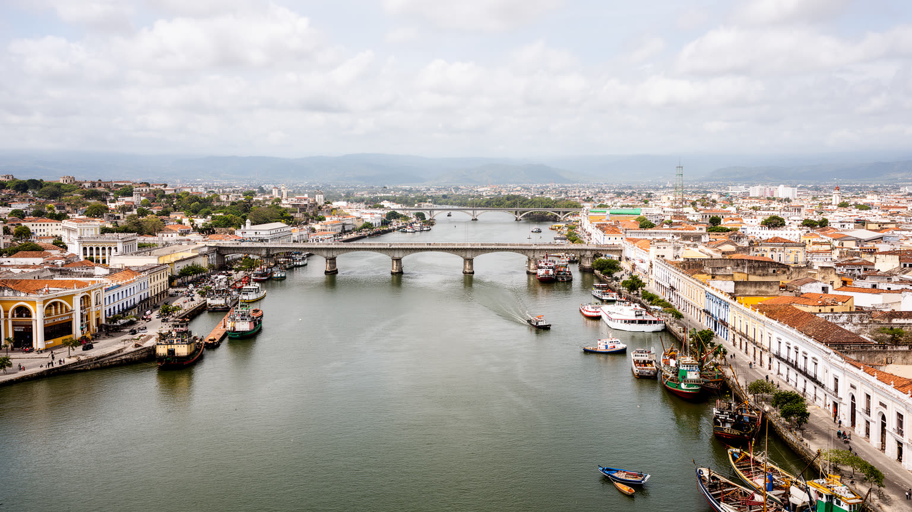
サントドミンゴの都市構造は、オサマ川の河口、カリブ海に向いた海岸、旧市街の石造の街路、内陸へ伸びる幹線道路でできています。川は植民地都市の防御と港湾の入口であり、現在も物流、観光、橋の交通、低地の水害リスクを結びます。旧市街は歩いて読める大きさですが、首都圏全体は東西南北へ広がり、サントドミンゴ・エステ、ノルテ、オエステ、ロス・アルカリソスなどの住宅地と職場を毎日の移動で結んでいます。海辺のマレコンは象徴的な眺望を作る一方、高潮、排水、道路交通、ホテル開発の圧力も受けます。都市を理解するには、世界遺産の石畳だけでなく、橋の混雑、港のトラック、低地の排水、郊外から中心へ向かうバスや乗合交通を同時に見る必要があります。水辺は美しい表面であると同時に、都市の弱点が集まる場所です。川と海の近さは、植民地時代の権力、現代の物流、気候リスク、観光のイメージを一つの地図に重ねています。さらに、川を越える移動は所得差や行政境界も映します。中心に近い仕事場へ行くために長い時間を使う人が多く、橋や幹線道路の状態は家計と疲労に直結します。地形は景観ではなく、暮らしの配分そのものです。だから都市の改善は、旧市街の美化だけでなく、排水、橋、バス停、歩道、街灯の細部へ及ぶ必要があります。そこに首都の日常が宿ります。
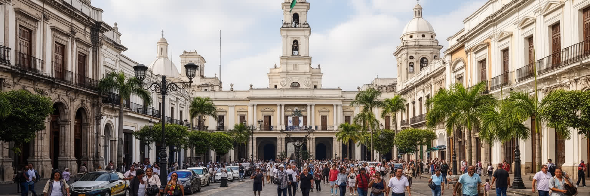
サントドミンゴは、ドミニカ共和国の国家運営が最も濃く見える場所です。大統領府、国会、最高裁、中央銀行、省庁、大使館、大学、報道機関が首都圏に集まり、法律、予算、外交、安全保障、災害対応の判断が都市の日常と隣り合います。政治は建物の中だけに閉じず、警備、抗議、選挙運動、交通規制、公共事業、停電や水道への不満として街路に現れます。首都で決まる政策は、観光地、農村、国境地帯、海外移民の家族へ影響しますが、その負担や利益は均等ではありません。ハイチとの関係、米国への移民、送金経済、治安政策は、抽象的な外交問題ではなく、学校、職場、病院、行政窓口で経験されます。サントドミンゴの地政学は、カリブ海の港湾都市であることと、島の東側国家の中心であることの両方から生まれます。首都を歩くことは、国家の制度がどこに置かれ、誰がそこへアクセスしやすいかを読むことです。中心への集中は力を生みますが、地方との距離も広げます。行政機関へ近い人ほど手続きや抗議の機会を得やすく、遠い地域ほど首都で決まった政策を受け取る側になりがちです。首都性は権限の集中だけでなく、説明責任をどう街に開くかも問います。公共空間が安全に使え、報道や市民団体が声を届けられるかは、首都の民主性を測る重要な条件です。制度は街路で試されます。今も続きます。
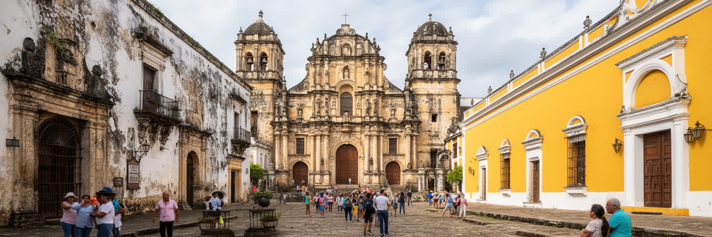
サントドミンゴの旧市街は、アメリカ大陸におけるスペイン植民地支配の初期拠点として知られます。大聖堂、要塞、修道院、石造の通り、広場は観光資源であると同時に、征服、布教、奴隷制、交易、行政の記憶を抱えています。遺産地区を美しい歴史地区として歩くだけでは、そこに刻まれた暴力や労働を見落とします。植民都市の建築は、ヨーロッパの制度がカリブ海へ移植された証拠であり、先住民、アフリカ系住民、混血社会の歴史とも切り離せません。世界遺産として保存されることで建物は守られますが、保存は誰の記憶を前面に出すかを選ぶ行為でもあります。観光客が写真を撮る広場の周囲には、土産物店、学校、住宅、行政施設、教会、夜の飲食店があり、過去と現在が重なります。サントドミンゴの遺産を読むには、植民地の威信だけでなく、その都市を作り、支え、排除された人びとの痕跡を同時に見る必要があります。保存と生活が両立してこそ、旧市街は展示物ではなく都市であり続けます。石造の建物を修復するだけでなく、住民の家賃、歩行者空間、夜間の安全、学校や小商店の存続を考えなければ、遺産は外から消費される背景になります。歴史地区の価値は、記憶と日常が同じ場所で続くことにあります。展示の言葉や案内板も、征服者だけでなく、先住民とアフリカ系の経験を伝える必要があります。
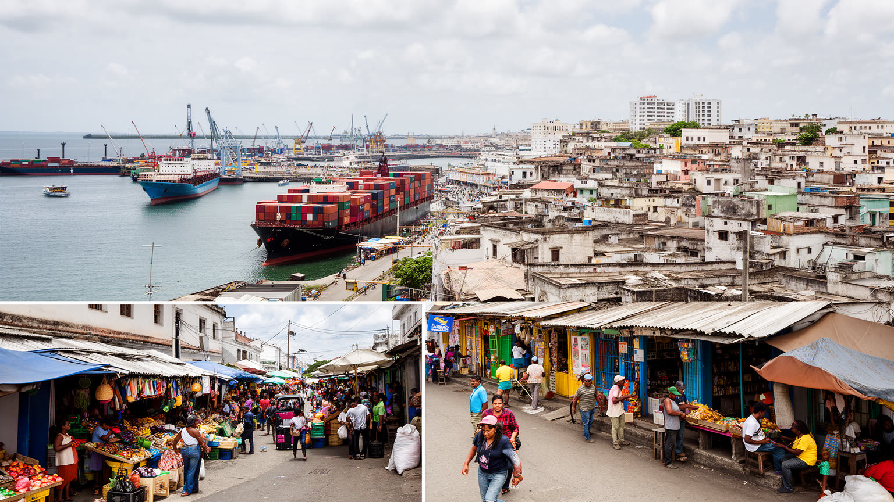
サントドミンゴの経済は、首都機能、港湾、金融、通信、卸売、建設、観光、教育、医療が重なって動きます。中心部には銀行、政府機関、企業事務所、大学、ショッピング施設が集まり、海港と倉庫、幹線道路、空港アクセスが輸入品や消費財の流れを支えます。しかし都市を維持する仕事は、統計に出やすい本社機能だけではありません。市場の販売、屋台、タクシー、バイク配送、清掃、警備、家事労働、ホテルの裏方、建設現場、港の荷役が、毎日の生活を動かしています。正式な雇用と非公式な仕事が並ぶため、収入、社会保障、休暇、交通費の差が大きくなります。海外からの送金や観光収入は家計を支えますが、物価上昇や住宅費も押し上げます。経済の強さを読むなら、成長率だけでなく、働く人が安全に移動し、安定した家に住み、医療や教育へ届くかを見る必要があります。サントドミンゴは国の富を集める首都であるほど、都市内部の格差もはっきり見せる場所です。港湾と商業の効率は、道路の混雑、税関、倉庫、配送員の労働条件に左右されます。消費の表面が明るいほど、その背後の長時間労働や不安定な収入を見落とさない視点が必要です。経済政策は投資誘致だけでなく、技能訓練、交通、保育、社会保障を含めて考える必要があります。仕事の質が首都の安定を作ります。賃金も重要です。
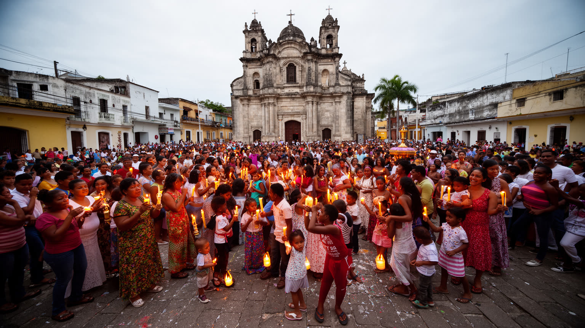
サントドミンゴの宗教生活は、旧市街の大聖堂だけでなく、地区ごとの教会、福音派の礼拝、家族の洗礼や葬儀、祝祭、音楽、墓参りに広がります。カトリックは国家儀礼や歴史遺産と結びつきますが、近年は福音派教会も多く、信仰は教育、相談、近隣の助け合い、政治的な価値観にも影響します。アフリカ系の記憶やカリブ海の民間信仰は、公式な宗教施設の外側で、音楽、身体表現、祭り、食の習慣に残ります。宗教は観光客が見る聖堂の装飾だけではなく、都市で人が困ったときに頼る関係でもあります。貧困、移民、病気、失業、暴力への不安がある地域では、教会が福祉や相談の入口になることがあります。同時に、性、家族、教育、政治参加をめぐる対立も信仰を通じて現れます。サントドミンゴの信仰を読むには、植民地の聖堂、住宅地の礼拝所、音楽と踊り、家族行事を同じ生活暦として見ることが大切です。祈りは過去の遺産ではなく、都市の日常を支える現在の制度でもあります。災害時や困窮時には、礼拝所が物資、情報、安心を分ける場にもなります。宗教の力は、建築の古さよりも、人が孤立したときに戻れる場所を地域に残す点にあります。祝祭の音、日曜の服装、家族の集まりも、都市の時間を区切る重要な合図です。信仰は街の時計でもあります。近隣の安心にも深くつながります。今も続きます。
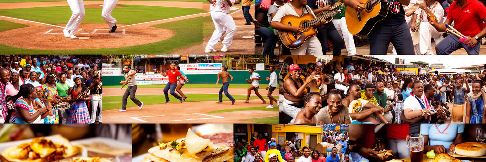
サントドミンゴの文化は、メレンゲ、バチャータ、野球、路上の食、家族の集まり、海辺の夜の散歩に強く表れます。音楽は舞台芸術である前に、バス、店、家、祭り、クラブ、ラジオで流れる生活のリズムです。メレンゲは国家的な象徴になり、バチャータは都市周縁や移民の感情を抱えて世界へ広がりました。野球は娯楽であり、米国との関係、若者の夢、地域の誇り、経済的な上昇の可能性を結びます。食文化も都市を読む入口です。米、豆、肉、揚げ物、トロピカルフルーツ、屋台、家庭料理、海辺の飲食は、観光客の楽しみであると同時に、働く人の昼食と夜の会話を支えます。文化は華やかなショーだけでなく、誰が演奏し、誰が店を開き、誰が夜の交通や警備を担うかによって成立します。サントドミンゴの魅力は、旧市街の歴史と現代の音楽が近距離で重なる点にあります。文化を消費するだけでなく、作り手と地域の生活条件を見れば、都市のリズムがより深く分かります。音楽産業が観光と結びつくほど、演奏者、ダンサー、音響、店舗スタッフの働き方も重要になります。文化は国の名刺である前に、都市で稼ぎ、集まり、記憶を分け合う方法です。若者の表現が残るには、練習場所、手頃な店、夜間交通、地域の寛容さも欠かせません。文化は居場所から育ちます。路地の音も都市の記憶です。今も続きます。
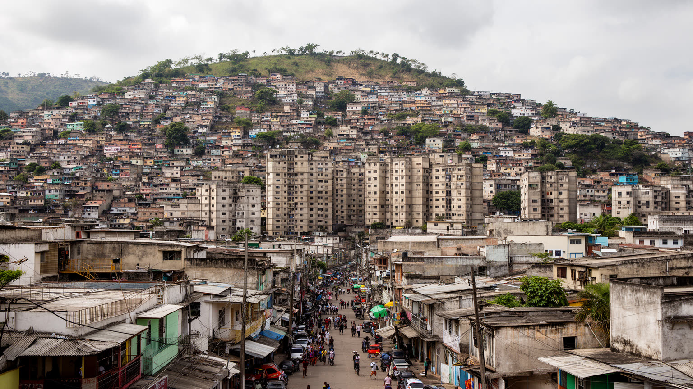
サントドミンゴの暮らしは、海辺や旧市街の印象だけでは捉えられません。首都圏には高層住宅、商業施設、ゲート付き住宅地、古い中心市街、非公式な住宅地、郊外の拡張地区が並び、生活条件の差が大きく現れます。中心に近いほど仕事、学校、病院、行政窓口へ届きやすい一方、家賃や土地価格は高くなります。遠い住宅地では通勤時間、交通費、渋滞、道路の安全、排水、停電、水道、廃棄物処理が生活の質を左右します。家族や近隣の支えは重要ですが、それだけでは都市サービスの不足を補いきれません。観光や金融が伸びても、住民が安定した住宅に住めなければ、都市の豊かさは偏ったものになります。洪水リスクのある低地やインフラの弱い地区では、気候の影響も貧困と結びつきます。住宅問題は個人の収入だけでなく、公共交通、排水、学校、医療、治安、雇用の配置と一体です。サントドミンゴを生活都市として読むには、中心の景観と同じ重さで、郊外の通勤路、夜の街灯、排水路、学校までの距離を見る必要があります。住まいは家族の尊厳だけでなく、災害時に安全でいられるか、子どもが学びを続けられるか、女性や高齢者が移動できるかを決めます。住宅の質は都市の未来そのものです。住宅地の改善は、壁の内側だけでなく、歩ける道路、排水、公共照明、近所の商店まで含めて考える必要があります。
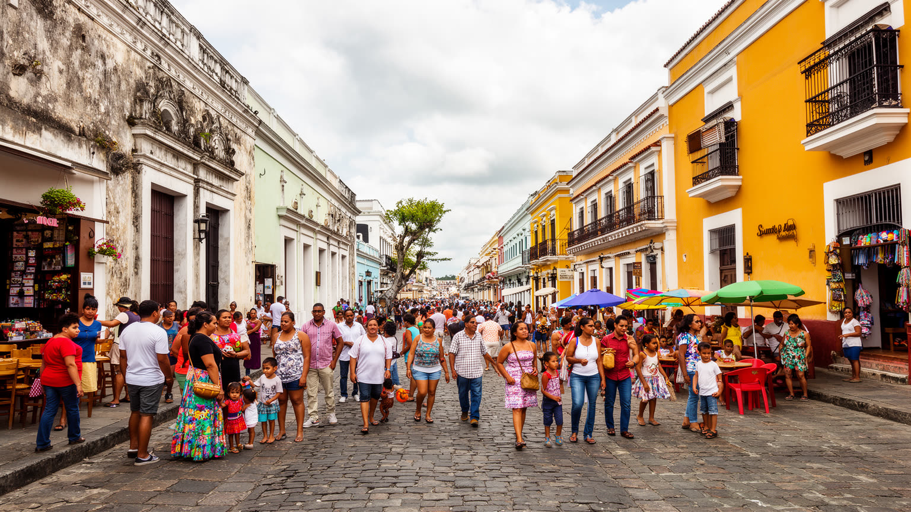
サントドミンゴ観光は、旧市街の石畳、大聖堂、要塞、博物館、コロンブス関連の遺産、マレコンの海風、音楽の夜を組み合わせて楽しむことができます。プンタカナのリゾートとは違い、ここでは国家の歴史、行政、生活、交通、商業が観光動線のすぐそばにあります。観光客が歩く道の近くで、住民は通勤し、子どもを学校へ送り、市場で買い物をし、教会へ通い、夜の飲食店で働きます。観光が増えれば、ホテル、飲食、ガイド、交通、文化施設に収入が生まれますが、家賃、物価、混雑、治安対策、景観管理の負担も増えます。旧市街を保存することは重要ですが、保存が住民を押し出すなら、都市は舞台装置になってしまいます。観光の価値は、訪問者が写真を撮る満足だけでなく、住民がその地区で暮らし続けられるかで測る必要があります。サントドミンゴの観光を読むことは、遺産、海辺、音楽、食、労働、住宅を一つの都市体験として理解することです。名所の背後にある日常を見たとき、首都の複雑さが立ち上がります。観光案内の外側には、朝の清掃、警備、仕込み、バス通勤、露店の準備があります。その時間を想像できるほど、訪問は消費から理解へ近づきます。観光が地域の店や若い作り手へ利益を戻せるかも、都市の成熟を決める視点です。滞在者と住民の距離が近い都市です。だから配慮も必要です。
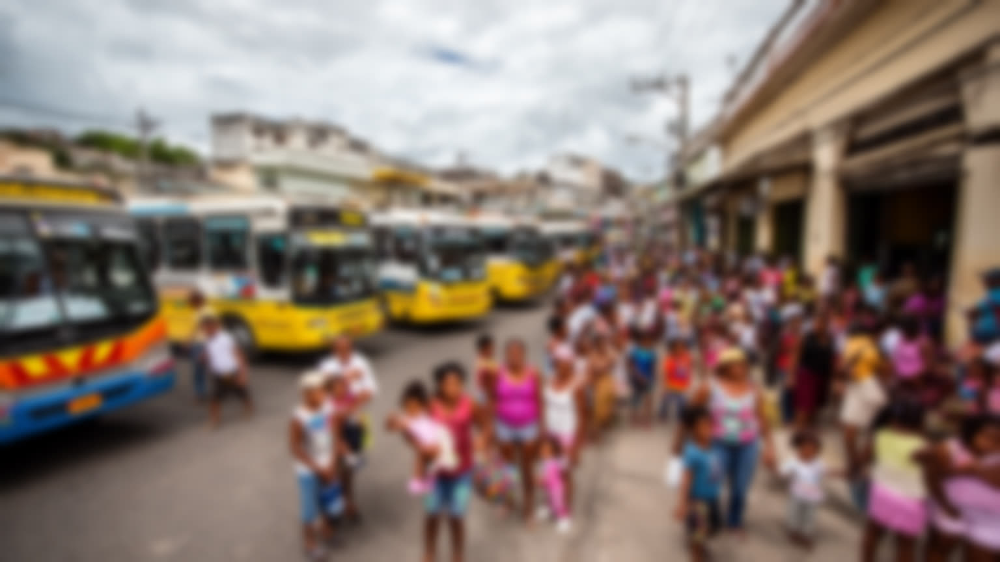
サントドミンゴは、国内移住、海外移民、ハイチとの関係が交差する都市です。地方から首都へ移る人は、教育、医療、行政、仕事、家族の支援を求めます。米国やスペインへ移住したドミニカ人からの送金は、住宅、学費、消費、事業資金を支え、首都の経済にも流れ込みます。一方、ハイチ系住民や移民労働者をめぐる問題は、国籍、労働、医療、教育、差別、警察、国境管理と結びつき、都市の日常に緊張を生みます。建設、清掃、家事、農産物流通、サービス業には移民労働が関わりますが、その権利や安全は十分に守られないことがあります。移民を単なる労働力として見ると、都市を支える人の生活が見えなくなります。サントドミンゴを読むには、空港、送金窓口、バスターミナル、行政窓口、学校、病院、市場を移動の地図として見る必要があります。国境は遠い線ではなく、首都の職場、言葉、肌の色、書類、家族の計画の中に現れます。多くの人を集める都市ほど、誰を住民として認めるかが問われます。移民の子どもが学校で学べるか、病院で説明を受けられるか、労働者が賃金を請求できるかは、都市の包容力を測る具体的な基準です。移動の自由と排除の境界は、毎日の手続きに宿ります。送金で建つ家、国境から来るバス、海外へ向かう空港の列は、家族の希望と不安を同時に運びます。都市です。
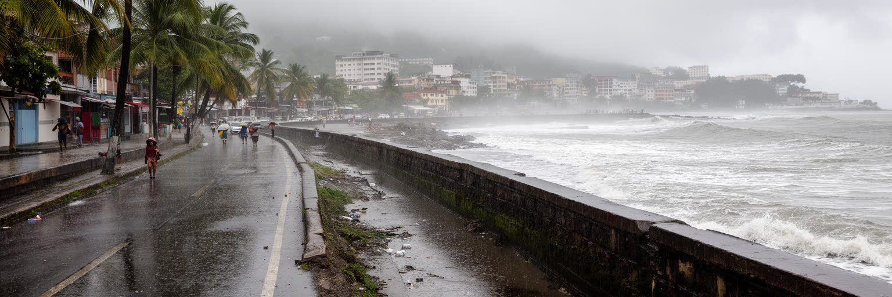
サントドミンゴの気候は、熱帯の暑さ、雨季の豪雨、ハリケーン、高潮、洪水、排水不良を都市の課題にします。海辺の道路や川沿いの低地は景観として魅力的ですが、強い雨や高潮のときには弱点になります。排水路、橋、道路、港湾、住宅地の整備が遅れれば、被害は低所得地区へ集中しやすくなります。暑さも大きな問題です。屋外労働者、露店、警備員、交通従事者、高齢者、エアコンを使いにくい家庭は、気温上昇の影響を強く受けます。停電や水不足が重なると、暑さは健康問題になります。災害対応は、堤防や排水施設だけでなく、避難情報、地域の見守り、多言語の案内、学校や教会の避難機能、医療へのアクセスと結びつきます。観光地の安全だけを守っても、都市全体は強くなりません。サントドミンゴの気候適応は、海辺の美しい再開発と、日常の排水、廃棄物、住宅、日陰、公共交通を同時に改善することです。水と暑さへの備えは、都市の公平性を測る重要な尺度になります。災害時には、普段の格差がそのまま被害の差になります。安全な住宅、避難路、近所の連絡網、信頼できる情報があるかどうかが、回復の速さを決めます。気候対策は生活政策でもあります。涼める公共空間、木陰、排水路の清掃、停電時の支援は、観光施設より先に暮らしを守る基盤になります。日々の備えも大切です。